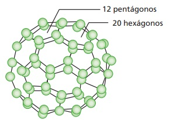

1) Calcule os seguintes logaritmos.
a) log4 1/64 = b) log7 2401 = c) log 10000 =
d) log16 4 = e) log16 0,5 =
2) Sabendo que log 2 ≅ 0,3 e log 5 ≅ 0,7, determinar o valor aproximado de:
a) log (5/2) = b) log 20 =
c) log √5 = d) log 0,4 =
1) O montante acumulado pela aplicação de R$ 1000,00 em um investimento de renda fixa de 12% ao ano, pode ser
calculado pela fórmula
M = 1000 · (1,12)n,
onde n é o tempo em ano.
Em quanto tempo o valor do montante será de R$ 1200,00?
(Use: log 1,2 = 0,08 e log 1,12 = 0,05.)
1) Um poliedro convexo tem 16 arestas e o número de faces igual ao número de vértices. Qual o nome deste poliedro?
2) Um poliedro convexo tem 6 faces triangulares e 2 faces quadrangulares. Determine:
a) o número de faces.
b) o número de arestas.
c) o número de vértices.
3) Numa molécula de um tipo de fulereno, os átomos ocupam os vértices de um
poliedro convexo com 12 faces pentagonais e 20 faces hexagonais regulares, como em uma bola de futebol.
Qual é o número de átomos de carbono na molécula? E o número de ligações entre esses átomos?
